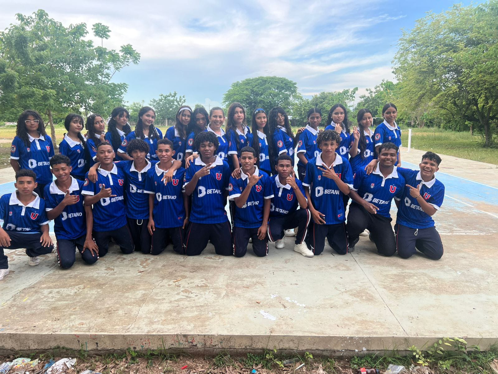
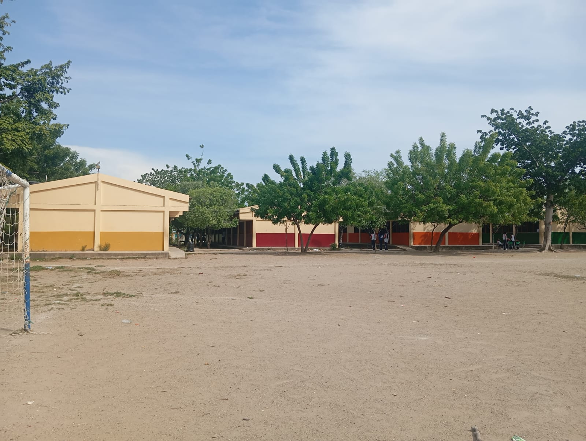
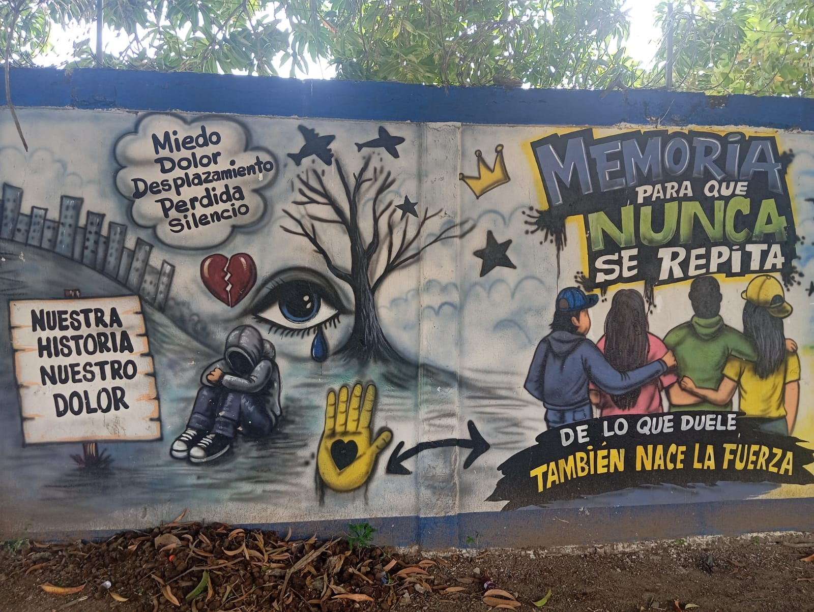
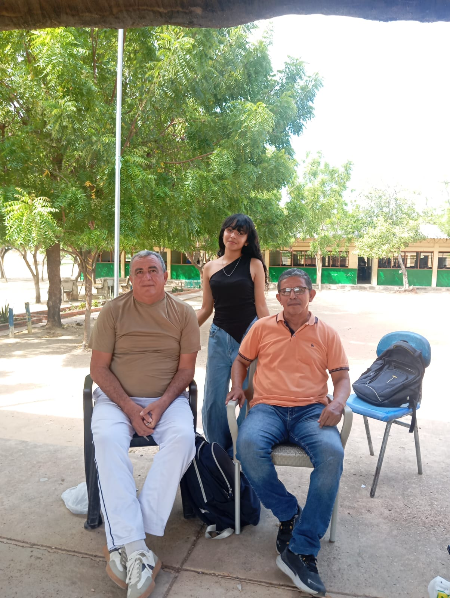
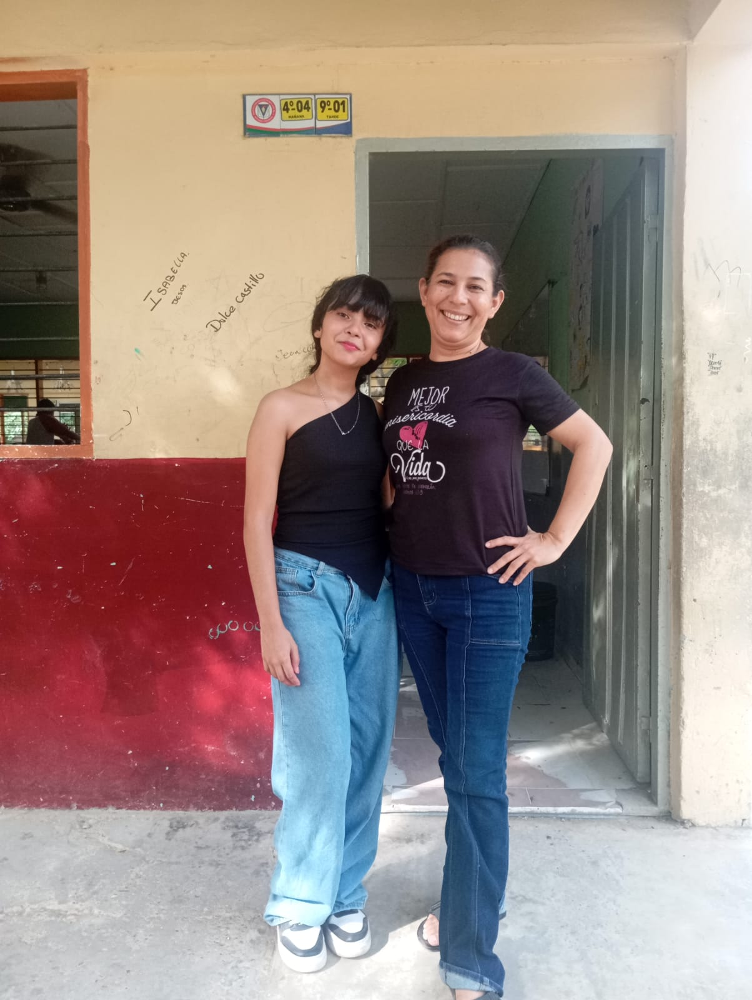
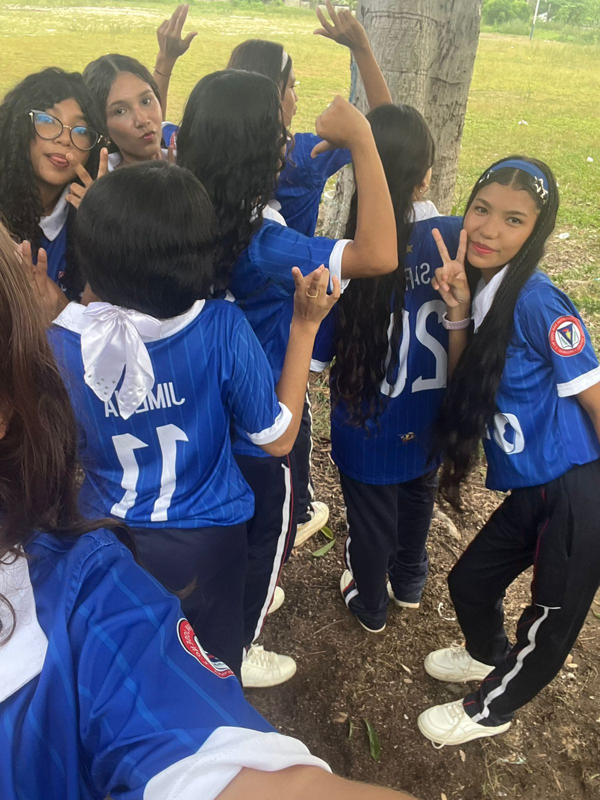

📖 Un peu d’histoire
L’Institution Éducative San José N°2 a été créée en 1959 sous le nom de Escuela San José de Varones. En 1982, l’école est devenue mixte. Aujourd’hui, elle possède trois sites dans la zone urbaine de Magangué.
↗🏫 Bienvenue à San José N°2 !
Bienvenue à l’Institution Éducative San José N°2, située à Magangué, dans le département de Bolívar, en Colombie. Pour moi, cette institution est un lieu spécial et insolite, parce qu’elle fait partie de l’histoire et de la vie de nombreuses personnes de Magangué.

Bienvenue dans notre lieu insólite
Fragments de notre quotidien
Des instants simples,
des histoires immenses.






Ce que nous gardons
L’Institution Éducative San José N°2 a été créée en 1959 sous le nom de Escuela San José de Varones. En 1982, l’école est devenue mixte. Aujourd’hui, elle possède trois sites dans la zone urbaine de Magangué.
↗Si vous voulez découvrir un lieu important de Magangué, je vous invite à découvrir San José N°2. Ce n’est peut-être pas un lieu touristique traditionnel, mais il possède quelque chose de spécial : son histoire, ses élèves et les souvenirs de plusieurs générations. Bienvenue à San José N°2 ! ❤️
↗Nos souvenirs en mouvement
Des moments à revoir, écouter et partager.
Nous sommes arrivés à la fin de cette aventure.
✦